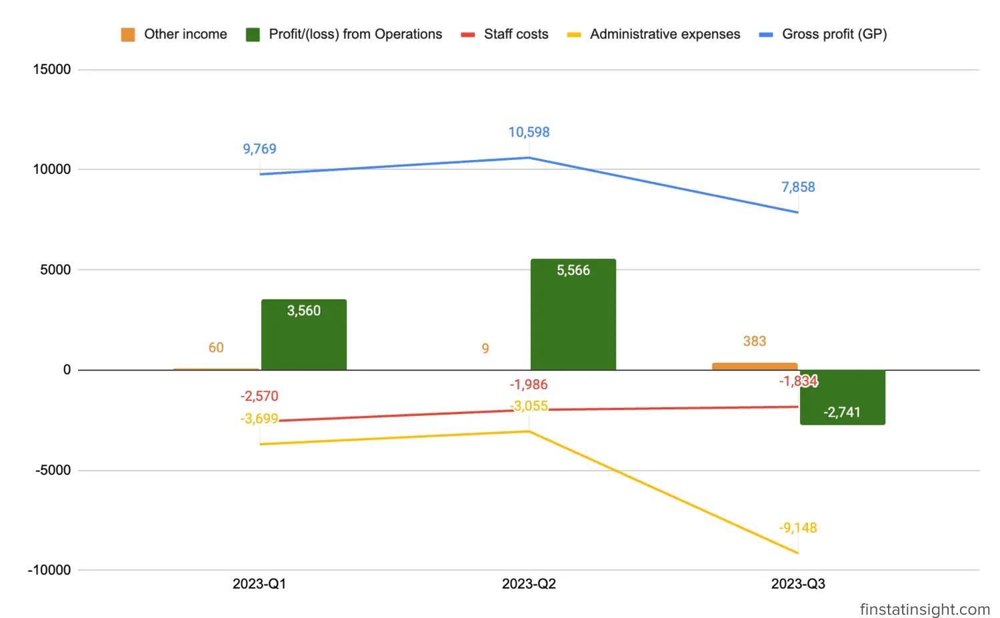
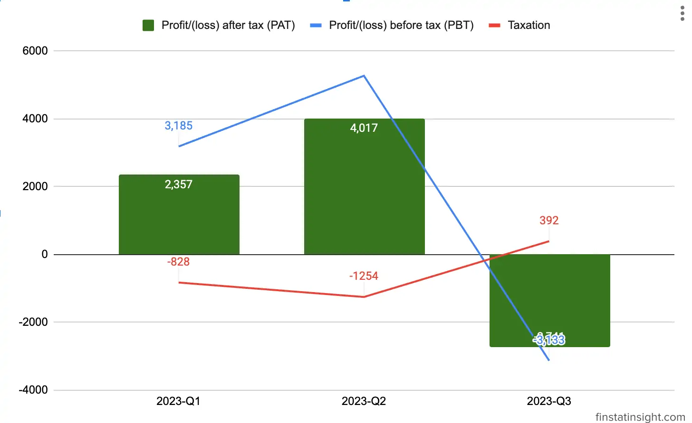

Revenue: The Group reported a revenue of RM15.52 million for the current financial quarter, with a significant focus on aesthetic services, contributing approximately 84.28% of the total revenue.
Below is the chart & table showing the segmental analysis of the group’s revenue for the past 3 quarters.
| Quarters | 2023-Q1 | 2023-Q2 | 2023-Q3 |
|---|---|---|---|
| Items | 3/31/2023 | 6/30/2023 | 9/30/2023 |
| Aesthetic services | 14,930 | 15,923 | 13,074 |
| General medical services | 1,379 | 1,432 | 1,804 |
| Sale of skincare products | 502 | 537 | 635 |
| Total | 16,811 | 17,892 | 15,513 |
Loss Before Tax: Despite the revenue generated, the Group recorded a loss before tax amounting to RM3.13 million. This loss was primarily attributed to administrative expenses totaling around RM9.15 million.
Administrative Expenses Breakdown: The substantial administrative expenses included one-off non-recurring listing expenses and consultancy fees related to the IPO exercise, amounting to RM3.85 million for the quarter under review. Substracting 3.85 millions, there is 5.3 millions of “others” administrative expenses.
Adjusted Profit Before Tax: Adjusting for the one-off listing expenses and consultancy fees associated with the IPO exercise, the company achieved an adjusted profit before tax of RM0.72 million for the financial quarter under review.
This financial snapshot indicates a challenging quarter for DC Healthcare Holdings Berhad, marked by a significant loss before tax primarily due to exceptional expenses related to the IPO exercise. However, the adjusted profit before tax reflects a more positive underlying operational performance once these one-off costs are excluded. It suggests that, beyond the exceptional expenses, the core business activities are contributing positively to the company’s financial position.
Below is table consists of 3 quarters Profit & Loss Statements data.
| Quarters | 2023-Q1 | 2023-Q2 | 2023-Q3 |
|---|---|---|---|
| Periods | 3/31/2023 | 6/30/2023 | 9/30/2023 |
| Revenue | 16,811 | 17,892 | 15,513 |
| Cost of sales | -7,042 | -7,294 | -7,655 |
| Gross profit (GP) | 9,769 | 10,598 | 7,858 |
| Other income | 60 | 9 | 383 |
| Staff costs | -2,570 | -1,986 | -1,834 |
| Administrative expenses | -3,699 | -3,055 | -9,148 |
| Profit/(loss) from Operations | 3,560 | 5,566 | -2,741 |
| Finance costs | -375 | -295 | -392 |
| Profit/(loss) before tax (PBT) | 3,185 | 5,271 | -3,133 |
| Taxation | -828 | -1,254 | 392 |
| Profit/(loss) after tax (PAT) | 2,357 | 4,017 | -2,741 |
| Other comprehensive income, net of tax | 1 | ||
| Total comprehensive income for the financial period | 2,358 | 4,017 | -2,741 |
| Profit for the financial period attributable to Owners of the Company | 2,357 | 4,017 | -2,741 |
| Total comprehensive income for the financial period attributable to Owners of the Company | 2,357 | 4,017 | -2,741 |
| Earnings per share attributable to Owners of the Company: Basic/Diluted (sen) | 0.3 | 0.5 | -0.28 |
Let’s analyze the financial data presented in the table for each quarter and provide insights for investors:
Revenue Trend: Revenue has experienced fluctuations across quarters, starting at 16,811 in Q1, peaking at 17,892 in Q2, and then declining to 15,513 in Q3.
Gross Profit and Cost of Sales: Gross profit (GP) has followed a similar trend to revenue, indicating a consistent gross profit margin. Investors should closely monitor the cost of sales to ensure that the company maintains healthy profit margins and operational efficiency.

Operating Expenses: Administrative expenses have shown a significant increase in Q3, primarily due to one-off non-recurring listing expenses and consultancy fees related to the IPO exercise amounting to RM3.85 million. But it doesn’t explained further the other RM5.3 million which balooning the administrative expenses to RM9.15 million this Q3.

Profitability: Profit before tax (PBT) has experienced volatility, with a positive trend in Q2 but turning negative in Q3. The decline in profitability in Q3 is attributed to softened profit margins in medical aesthetic services, higher staff costs, and reduced bookings.

Earnings Per Share (EPS): Earnings per share (sen) have shown a decline in Q3, reaching -0.28 sen, indicating a negative impact on shareholder returns. Investors should assess the company’s plans to enhance EPS and its commitment to delivering shareholder value.
The Group believes that its prospects in the aesthetic medical service industry are favourable in view of our competitive strengths.
– DC Healthcare Holdings Berhad Q3 Interim Financial Report ***
DC Healthcare’s proposed acquisition of 200,000 ordinary shares in I Bella Sdn Bhd (“IBella”) from Then Yen Tsing (“TYT”) and Arrow Peak Sdn Bhd (“Arrow Peak”) signifies a strategic move to obtain 100% equity interest in IBella. The total purchase consideration for this acquisition is set at a substantial amount of up to RM70,000,000.
The proposed transaction will be structured with a combination of cash and the issuance of new ordinary shares in DC Healthcare. Specifically, up to RM35,000,000 will be paid in cash as the Cash Consideration, while the remaining RM35,000,000 will be satisfied by issuing 60,344,828 new ordinary shares in DC Healthcare at an Issue Price of RM0.58 per Share. These newly issued shares, referred to as “Consideration Shares,” are a significant component of the overall purchase consideration.
This acquisition strategy allows DC Healthcare to leverage its existing financial resources through a combination of liquid assets (cash) and equity issuance. The issuance of new shares serves as a means of financing the acquisition, providing an alternative to using exclusively cash reserves.
The Issue Price of RM0.58 per Share is a critical aspect of the transaction, representing the valuation at which DC Healthcare is willing to dilute its ownership in exchange for acquiring IBella. The pricing reflects the perceived value of IBella and the strategic importance of the acquisition to DC Healthcare’s overall business objectives.
Upon completion of the Proposed Acquisition, DC Healthcare will gain complete ownership of IBella, potentially unlocking synergies and strategic advantages for both entities. The acquisition aligns with DC Healthcare’s growth strategy, allowing the company to diversify its portfolio or strengthen its position in the market.
DC Healthcare Holdings Berhad is a Malaysian company that provides top-quality skin and aesthetic treatments complemented by world-class client care and professionalism. They aim to be the catalyst for transformative change in the field, driven by advanced technology and a genuine, compassionate, patient-centered approach.
Headquarters Location
Listed on Bursa Malaysia
DC Healthcare Holdings Berhad, established in 2016, began as a general medical services provider before strategically transitioning to specialize in non-invasive and minimally invasive aesthetic procedures. The key milestones and features of the company include:
DC Healthcare is a dominant player in the aesthetic medicine market with a substantial market share of 11.1%. Key operational and financial aspects include: